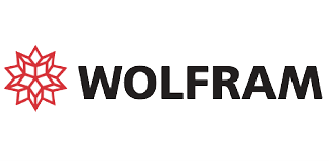
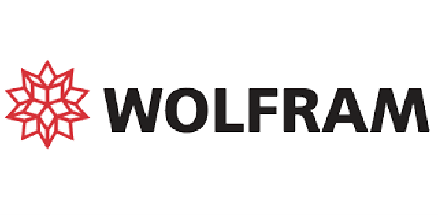
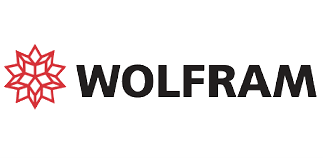

si ringrazia:


 

DI COSA SI TRATTA?
La Conferenza Italiana Studenti di Fisica (CISF) è l’evento annuale di punta organizzato dall’Associazione Italiana Studenti di Fisica (AISF). I partecipanti avranno l’opportunità di prendere parte ai seminari tenuti da ricercatori esperti a livello nazionale ed internazionale (sia interni che esterni all’Università di Milano-Bicocca) e potranno visitare i laboratori e i centri di ricerca situati sul territorio milanese. Inoltre, non mancheranno momenti dedicati alla scoperta della città e a serate all’insegna del divertimento e della socialità.
Come ogni CISF che si rispetti, una giornata sarà dedicata all’AGA (Assemblea Generale Annuale), dove tutta AISF (o quasi) si riunisce per prendere decisioni sull’anno che verrà!
QUANDO E DOVE?
La IX edizione della CISF sarà ospitata dal comitato locale di Milano-Bicocca dal 25 al 30 marzo 2025. Il Comitato Organizzatore promette un programma ricco e coinvolgente, con diverse tipologie di attività da svolgersi sia all’interno dall’Ateneo di Milano-Bicocca sia in spazi iconici della città di Milano!
si ringrazia:
